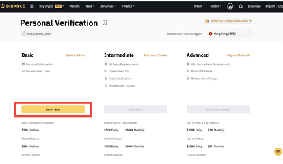
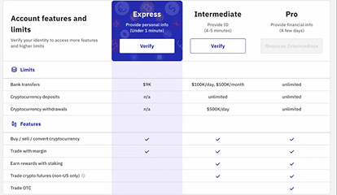
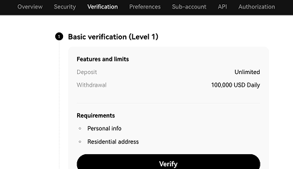
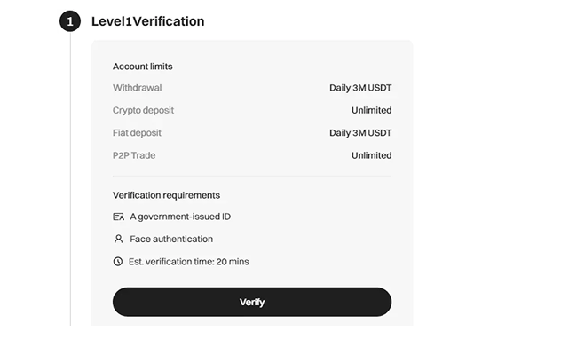

Sole product designer · UX + UI + regulatory flows
2Regulated markets
~3 weeksPer MVP
4 roundsQuiz redesign
ApprovedMiCA + AUSTRAC
Product
KuCoin identity verification (app & web)
Target users
Retail crypto users in Australia and the EU, new and existing
Scope
AU and EU KYC MVPs, ASIC suitability test, existing-user migration
Team
1 PM, 1 compliance officer, 5 engineers
Why it mattered
In 2024 Australia and the EU both introduced stricter crypto KYC rules. Without compliant onboarding, the exchange risked losing access to two of its biggest markets, and the requirements kept changing while compliance negotiated with the regulators.
One short flow had to become two regulated journeys
Australian and European users used to share one five-step KYC flow. New rules in both regions required stricter Level 2 checks before anyone could reach derivatives, and each regulator asked for different things.
Before the new rules · AU + EU5 steps to spot + derivatives
Select country
Personal info
Scan ID
Scan face
Submit
After the 2024 rules
🇦🇺 AustraliaUp to 11 steps
Level 1 · unlocks spot
Select Australia
Scan ID
Scan face
Address
Terms & conditions
Submit Level 1
Level 2 · unlocks derivatives
Choose user type
Retail
Advanced verification
Knowledge test (3 questions)
Suitability test (13 questions)
Submit Level 2
Wholesale
Proof of assets
Terms & conditions
Submit
🇪🇺 Europe14 steps
Level 1 · unlocks spot
Select EU country
Terms & conditions
Personal info
Scan ID
Scan face
Signature
Submit Level 1
Level 2 · unlocks derivatives
Start advanced verification
Risk disclaimer
Appropriateness test
Declaration
Proof of address
Proof of assets
Submit Level 2
Tests added by the new rules: fixed wording, no hints allowed
One five-step flow became two regulated journeys: Australia splits retail from wholesale, and the EU adds disclosures and declarations.
🇦🇺 Australia · AUSTRAC + ASIC
Two user types, one fixed test
Type sets access. Each user is classified as retail or wholesale, and that decides what they can use.
Wording can't change. Retail users must pass ASIC's suitability test before using derivatives, and its questions can't be reworded or coached.
🇪🇺 Europe · MiCA
More screening, warnings users must read
Screening and classification. PEP and sanctions screening, investor risk classification, and source of funds above set thresholds.
No buried warnings. Risk warnings before key actions belong in the flow, not in the legal small print.
The design question
How do you make a strict, pass/fail compliance flow feel fair, without coaching users toward the right answers?Requirements also kept shifting during the build, so the design had to absorb change without losing its structure.
03 · Solution
Two flows on one shared core
Both markets share the same identity core (photo ID, face scan, personal details), then branch into their own Level 2 rules. Each screen asks for one thing and says what it unlocks.
Australia · AUSTRAC + ASIC
One choice, two branches: after basic verification, retail users take the suitability test (branch 1) and wholesale users upload evidence (branch 2).
Europe · MiCA
Disclosure before access: after identity and documents come the appropriateness test, disclosures and declarations, plus proof of assets above a threshold.
04 · Key decisions
Three decisions that made strict rules usable
The quiz went through four rounds before it worked for both compliance and users. First, I benchmarked how five exchanges handle tiered verification and knowledge tests. Two patterns held across all five: one question per page, and education before the test. Both shaped the first two decisions.
Coinbase
Guide before the quiz: educate, then assess.

Binance
Levels side by side: each benefit is explicit.

Kraken
One matrix: time to complete vs. limits unlocked.

OKX
Requirements first: limits listed before one Verify button.

Bitget
Benefits up front: what each level earns.
01One question per page
Problem
A long scrolling quiz of fixed legal wording was quick to build but hard to read.
Decision
One question per screen, with progress by topic so users see the full scope up front.
Trade-off
More taps, in exchange for comprehension where it legally matters.
02Educate before the gate
Problem
Novice users met a hard pass/fail quiz cold, so they either guessed or gave up.
Decision
An optional crypto guide before the quiz. After a missed attempt, users see which topics to review and a way back to the guide.
Trade-off
No hints inside the quiz itself. The guide sits outside it, as education only.
03Let users choose their path
Problem
In Australia, retail and wholesale users had different requirements and benefits, and there was no existing pattern to follow.
Decision
A user-type choice at the start of Level 2 that shows what each path asks for and unlocks. Then it branches: retail to the suitability test, wholesale to evidence upload.
Trade-off
One extra choice up front, so no one sees steps that don't apply to them.
05 · Changing rules
Three months of changing rules
Over three months of build, requirements changed on short notice. I worked directly with compliance and legal and reshaped the flow each month: a wireframe to align understanding, then revised benefits, then the branched flow.
Month 1 to Month 3: how the identity flow changed as AU and EU requirements moved.
Built once, composed per market
To keep two markets consistent, each screen type was designed once (forms, questionnaires, declarations, document upload) and composed differently per jurisdiction.
Page modules shared by AU and EU.
See the component modules and verification states
Landing pages, required-information blocks and every verification step state.
After launch: a modular KYC framework
Once both markets shipped, I worked with the product and design team to turn these patterns into a framework for future markets: a global identity core, plus a regional branch per jurisdiction.
A new market becomes a new branch, not a new flow.
06 · Migration
Re-verify without starting over
Existing users moving to the EU entity had to re-verify under MiCA. Instead of starting over with a blank account, the flow reads where each user already is and asks only for what MiCA still requires.
State mapping
Only the missing steps
Each starting verification level maps to the minimum extra steps.
Communication
Why you're asked again
Explains the reason and what happens if you don't act, without alarming users.
Recovery
Partial completion is a state
A user halfway through can see where they are and pick it up later.
Migration from the main exchange to the EU entity.
07 · Outcome
Both markets approved, one framework to reuse
MiCA licence granted
The EU flow was demoed to the regulator as part of KuCoin's MiCA licence application.
AUSTRAC registration confirmed
The Australian entity is registered with AUSTRAC.
The crypto guide shipped
Compliance accepted it as education, not coaching, so it shipped as a product feature.
A template for new markets
The modular framework became the team's starting point for future jurisdictions.
On metrics: these were compliance-gated MVPs, so success meant clearing the regulator. I don't have post-launch funnel data; conversion would have been the next phase.
What I learned
01
Compliance is a design material
The best decisions, like the pre-quiz guide, came from designing with the compliance officer in the room, not around them.
02
Go modular from day one
I distilled the framework after launch; starting with it would have saved rework across the two markets.
03
Scope migration early
Migration came in late; designing it alongside the main flows would have been smoother.
Tap the image or press ← → to move through the walkthrough · Esc to close